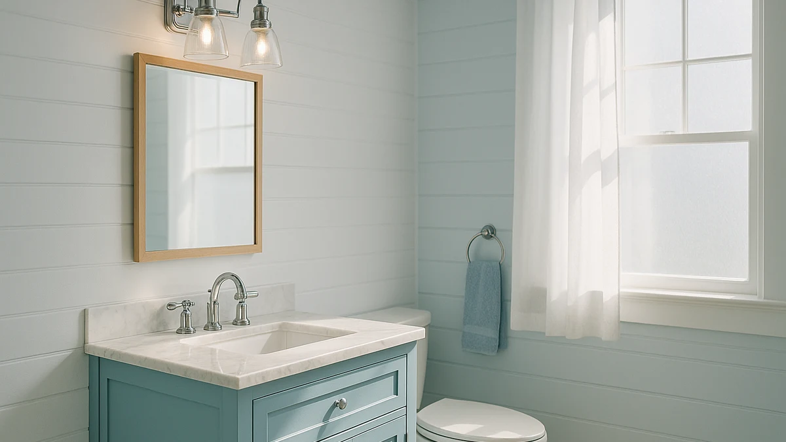

Best How to Install Vanity Lights (2026) | Best Bathroom Vanities


Things to Know Before You Buy
- This guide covers a fixture swap. Replacing one vanity light with another, where a box and wiring already sit in the wall, is a beginner-friendly job. Adding a light where none exists means running a new circuit, which is electrician work.
- Power off is non-negotiable. You cut the breaker and verify the circuit is dead with a tester before you touch a single wire. The wall switch alone is not enough.
- Wiring is color-matched. Black to black, white to white, ground to ground. If your wires do not follow that pattern, pause and get a pro to identify them.
- Mounting height matters. Most people set the fixture about 75 to 80 inches off the floor, or roughly 3 inches above the mirror, so the light hits your face instead of the top of your head.
- Budget about an hour and $20 in supplies. The fixture is the main cost. Wire connectors, electrical tape, and a voltage tester run cheap and you reuse the tools.
Swapping out vanity lights is one of the few bathroom upgrades that pays off every morning, and it costs far less than hiring out the job. You are swapping a dated fixture for a brighter, better-looking one, and the wiring underneath has not changed in decades. If you can match three wire colors and turn a screwdriver, you can handle this in about an hour.
The catch is that you are working with live electrical wiring, so the order of operations matters. You shut off the power first, you confirm it is off with a tester, and you connect the wires before you ever restore the breaker. This guide walks you through five concrete steps, from killing the power to flipping the switch on your new light. We focus on the standard case: replacing an existing vanity light where the box and wiring are already in the wall.
What You'll Need
- Supplies: the new vanity light fixture, wire connectors (wire nuts), electrical tape, and mounting screws with wall anchors (most fixtures include the screws)
- Tools: a non-contact voltage tester, a Phillips and flathead screwdriver, a stepladder, and a wire stripper if your wall wires need fresh ends
Step 1: Shut off the power at the breaker
Before you do anything else, go to your electrical panel and switch off the breaker that feeds the bathroom. Flipping the wall switch off is not enough, because the wires in the box stay live as long as the breaker is on. If your panel is not labeled, turn the bathroom light on, then flip breakers one at a time until the light dies. Tape a note over the breaker so nobody flips it back while you work.
Now confirm the circuit is actually dead. Hold a non-contact voltage tester near the existing fixture's wires once the cover is off, and make sure it does not light up or beep. This is the single most important safety step when you install vanity lights, and it takes ten seconds. Test the tester on a known live outlet first so you trust that it works.
Step 2: Remove the old fixture
With the power confirmed off, remove the old vanity light. Take off any glass shades or bulbs first so you do not break them, then loosen the decorative cap nut or the screws holding the base to the wall. Support the fixture with one hand as the last screw comes out, because it will drop once it is free. Lower it gently so the wires are exposed.
You will see three connections: a black wire, a white wire, and a ground that is either green or bare copper. Unscrew the wire connectors and separate the fixture wires from the wall wires. Set the old fixture aside. Take a quick photo of how the wires were joined before you disconnect them, since it gives you a reference if the new fixture is wired differently.
Look at the electrical box now. If it is loose, cracked, or packed with crumbling wire insulation, stop and have an electrician look at it before you mount anything new. A solid box is the foundation for the rest of this job.
Step 3: Mount the new bracket
Almost every new vanity light comes with its own mounting bracket, a small metal strap that screws onto the electrical box. Throw out the old bracket and use the one in the box, because it is matched to your fixture's screw spacing. Feed the wall wires through the center hole of the new bracket, then fasten the bracket to the box with the screws provided.
Check that the bracket sits level before you tighten everything down. A bracket that is even slightly tilted will leave your finished light crooked over the mirror, and that is the kind of detail you notice every morning. Hold a small level against it, or eyeball it against the top edge of the mirror, and adjust the screws until it is straight.
Step 4: Connect the wires by color
This is the step that actually wires the light, and the rule is simple: like color to like color. Twist the black fixture wire together with the black wall wire and cap them with a wire connector. Do the same for the two white wires. Then connect the ground, joining the green or bare copper fixture lead to the ground wire in the box. If the fixture has a green grounding screw on the bracket instead of a wire, wrap the ground wire around that screw and tighten it.
When you install vanity lights, the connections need to be mechanically solid, not just twisted by hand. Give each capped pair a gentle tug to make sure no wire slips out. If a copper end looks frayed or too short, trim it back and strip about three-quarters of an inch of fresh insulation so the connector grips clean wire. Wrap a turn of electrical tape around the base of each connector for extra security.
If your wall has only two wires and no ground, that points to older wiring. You can still mount many fixtures, but you should check your local code and consider having an electrician add a ground, since bathroom circuits carry real shock risk near water.
Step 5: Secure the fixture and test the light
Fold the connected wires neatly back into the electrical box so they are not pinched, then lift the fixture onto the mounting bracket. Line up the mounting holes and drive in the screws or thread on the cap nut that holds the base flush to the wall. Snug everything down, but do not overtighten, since cranking too hard can crack a fixture's base plate.
Install the bulbs and any shades now, while the power is still off. Then head back to the panel, switch the breaker on, and flip the wall switch. Your new light should come on at full brightness. If it does not, turn the breaker back off and recheck your connections, because a loose wire is the usual culprit.
Once the light works, the job is done. Step back and confirm the fixture sits level and the bulbs are evenly spaced. You have now learned how to install vanity lights from start to finish, and the next one will go twice as fast.
Common Mistakes to Avoid
The first mistake people make when they install vanity lights is trusting the wall switch instead of the breaker. A switch only interrupts the hot wire on its way to the fixture, and the box can still hold live wires. Always kill the breaker and test before you reach in.
The second mistake is skipping the ground wire. That green or bare copper lead is what carries a fault safely away from you, and in a wet bathroom it matters more than anywhere else in the house. Connect it to the fixture and the box every time, even if the old light somehow worked without it.
A third common error is mounting the fixture at the wrong height. Set too low, the bulbs glare in your eyes; set too high, the light casts shadows down your face. Aim for roughly 75 to 80 inches off the floor, about 3 inches above the mirror, and you will get even, flattering light.
Finally, do not overtighten the mounting screws or cap nuts. People assume tighter is safer, but cranking down on a thin metal or plastic base plate can crack it or warp the fixture against the wall. Snug is enough. The bracket carries the weight, not brute force on the final screw.
Our Top Picks
New lighting looks best over a vanity that matches it. If your lighting refresh is part of a larger remodel, these three cabinets pair cleanly with an updated fixture above the mirror, and each one leaves you a tidy wall to work with when you install vanity lights.

Editor’s Pick
Blossom 48" Double Sink Floating
A wall-mounted double-sink cabinet for a full primary-bath remodel. The floating design keeps the wall clean and gives you a wide span to center a long vanity light bar over both sinks.
$1,522.99
Check Price on Amazon
Best Value
WindBay 30" Wall Mount Floating
A compact 30-inch floating vanity that fits tight or guest bathrooms. It costs a fraction of the larger picks and still frees up the wall above for a single-bulb or short-bar fixture.
$529.00
Check Price on Amazon
Premium Choice
LUXOAK 61" Farmhouse Bathroom Double
A 61-inch farmhouse double vanity with the widest top of the three. The long counter suits two mirrors and a pair of sconces or one extended light bar, which makes it the standout for a statement bathroom.
$499.99
Check Price on AmazonFrequently Asked Questions
Can I install vanity lights myself, or do I need an electrician?
You can install vanity lights yourself when you are replacing an existing fixture and the box and wiring are already in the wall. Cut the power at the breaker, match the wires by color, and confirm the circuit is dead before you start. Call a licensed electrician if there is no existing box, the wiring looks damaged, or your local code requires a permit.
How long does it take to install vanity lights?
A straight fixture swap takes about an hour for a first-timer and closer to 30 minutes once you have done a few. Most of the time goes into removing the old light, mounting the new bracket, and double-checking the wire connections. Running a brand new circuit takes much longer and belongs to an electrician.
Which wire goes where when you install vanity lights?
Match the colors. Connect the black fixture wire to the black wall wire, the white to the white, and the green or bare copper ground wire to the ground in the box. If your wall wires have no clear colors, or you find extra wires, stop and have an electrician identify them before you connect anything.
How high should I mount a vanity light over the mirror?
Most people set the fixture about 75 to 80 inches from the floor, or roughly 3 inches above the top of the mirror. That height throws light onto your face instead of the top of your head, which cuts the shadows when you shave or apply makeup. Adjust a couple of inches either way to suit your mirror size and ceiling height.
What if there is no ground wire in my electrical box?
Older homes sometimes have only a black and white wire with no ground. You can still mount many fixtures, but a missing ground removes an important safety path, which matters in a damp bathroom. Check your local code, and have an electrician add a ground if you are at all unsure about the wiring.
Verdict
Knowing how to install vanity lights turns a job people assume needs a contractor into an afternoon project you can finish for the price of the fixture plus about $20 in supplies. The whole thing comes down to five steps done in order: shut off the breaker and test, remove the old light, mount the new bracket level, connect the wires black-to-black and white-to-white with the ground attached, then secure the fixture and flip the switch. Respect the power and match the colors carefully, and the result looks every bit as clean as a pro install. If your lighting update is part of a bigger remodel, pair the new fixture with a vanity that fits the wall, like the Blossom 48-inch double sink floating cabinet for a primary bath or the compact WindBay 30-inch for a smaller room. Do the safety steps right, and you will be looking at a brighter, better-lit mirror by the end of the day.